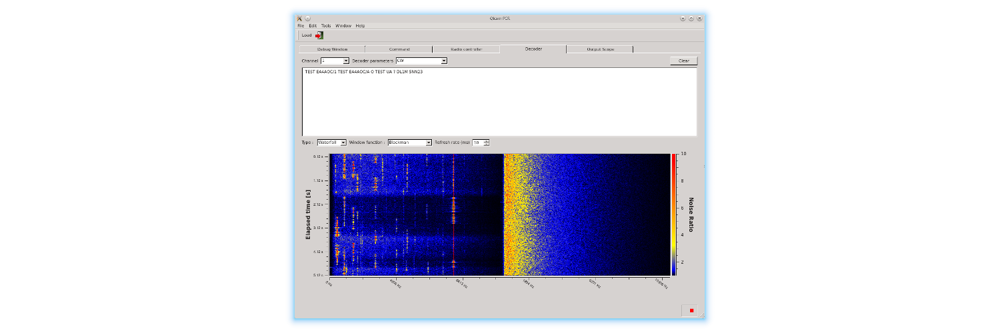
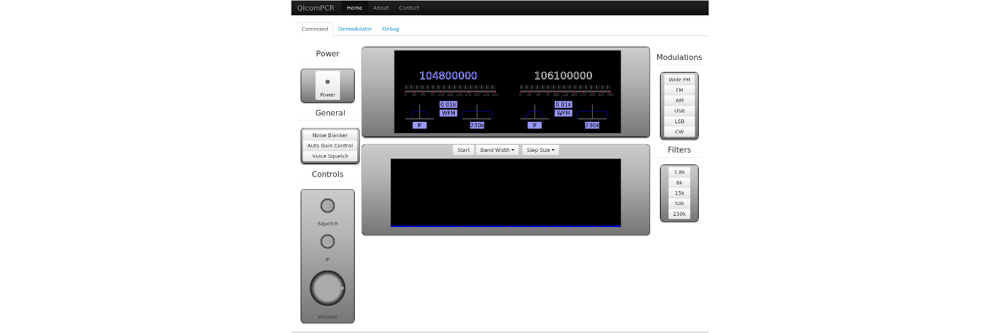

Lot of available decoders
Acars , CW, RTTY and pocsag decoders are available with a dual band waterfall view selector


Acars , CW, RTTY and pocsag decoders are available with a dual band waterfall view selector

The purpose of the backend is to drive the device, TCP/IP remote, decoders, sound encoder and recoder.
The Web GUI is built on top of Nodejs for the server side and HTML5 on the client.It support radio controls ( frequencies, modulations, filters ). Also a waterfall is available to select and view audio signal in time, the decoder selector let select Acars, CW and RTTY. And a sound feedback is also available HTML5 Web audio API.
A Qt client is available to support MACOSX, Windows and linux system. It provide full feature support like Web client.
Dynamic sound feedback in Web Browser ( Actually Firefox, Safari and Chrome). C++ backend stream sound to NodeJs which broadcast all HTML 5 client with same compressed data.
All data from controlled device like bandscope, squelch state, signal strengh is dynamically sent to all html5 client.
All client connected will see master interaction. Choice of avalable decoder, frequency selection in waterfall, decoder output text.